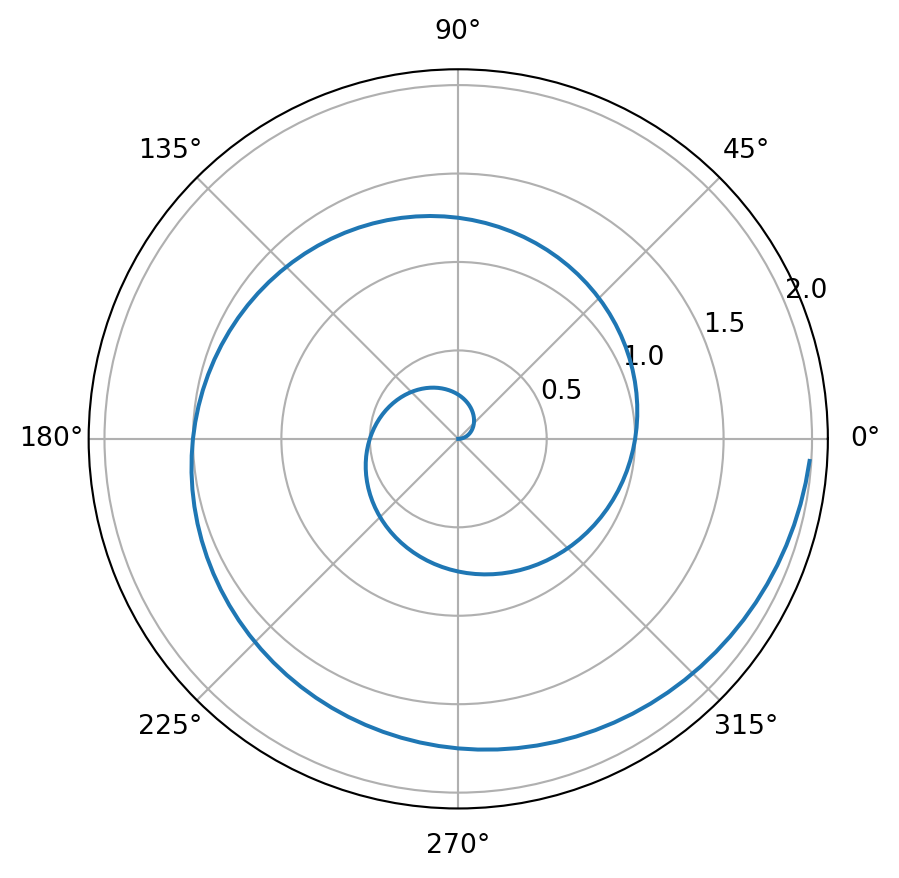

Exploring Polar Coordinate Plots in Python Using Matplotlib
Polar plot:
A polar plot is a type of graph that presents data in a circular format, offering a fresh perspective beyond the conventional Cartesian coordinate system. In a polar plot, data points are represented using radial distance from a central point and angular positions, creating a distinct visual representation that emphasizes patterns and relationships in a unique way. This type of plot is particularly suitable for data that exhibits directional or cyclic patterns, such as time series data, circular data (e.g., wind direction), or any data with inherent periodicity. Polar plots excel at revealing cyclical trends and variations that might go unnoticed on traditional scatter plots. They allow us to easily observe changes in data values as they evolve over angles, providing insights into periodic behaviors, phase shifts, and synchronization. Whether in the realms of engineering, meteorology, or scientific research, polar plots offer a valuable tool for gaining deeper insights from complex datasets that might otherwise remain hidden in a sea of numbers.
For a demonstration of a line plot on a polar axis, see Figure 1.
import numpy as npimport matplotlib.pyplot as plt# Define an array of values for the radial distancer = np.arange(0, 2, 0.01)# Convert the radial distance into anglestheta =2* np.pi * r# Create a figure and axis with polar projectionfig, ax = plt.subplots(subplot_kw={'projection': 'polar'})# Plot the data points on the polar axisax.plot(theta, r)# Customize the radial ticks to enhance readabilityax.set_rticks([0.5, 1, 1.5, 2])# Add grid lines for a clear referenceax.grid(True)# Display the enchanting plotplt.show()

Figure 1: A line plot on a polar axis
Let’s Break It Down: Decoding the Code
1. Importing Libraries: We start by importing the NumPy and Matplotlib libraries. These are our trusty tools for handling numerical calculations and creating visual wonders.
2. Defining Radial Values: The r array represents the radial distance from the center. We use NumPy’s arange() function to generate values from 0 to 2 in increments of 0.01. This gives us the varying distances from the center.
3. Converting to Angles: Here comes the magic! We calculate the corresponding angles in radians using the formula 2 * pi * r. This establishes the circular motion around the center point.
4. Creating the Plotting Canvas: With Matplotlib’s help, we create a figure and axis with a polar projection. This sets the stage for our polar coordinate plot.
5. Plotting the Data: Using the plot() function, we unveil our plot to the world! The theta values represent the angles, and the r values dictate the distance from the center. As we connect the dots, a beautiful pattern unfolds.
6. Radial Ticks and Grid: To make our plot more user-friendly, we customize the radial ticks to show values of 0.5, 1, 1.5, and 2. We also add grid lines to assist in interpreting the plot.
7. Showcasing the Masterpiece: Finally, we display our creation using plt.show(). Behold the captivating polar coordinate plot!
Conclusion: Your Voyage into Polar Coordinates
Congratulations! You’ve just embarked on a visual adventure that combines mathematics and artistry. Through a few lines of Python code, you’ve created a stunning polar coordinate plot using Matplotlib. As you delve deeper into the world of programming and data visualization, remember that every line of code has the potential to bring your imagination to life.
So go ahead, experiment with different values, and let your creativity flourish. The world of data visualization is at your fingertips, waiting for you to explore and innovate. Happy coding and plotting!